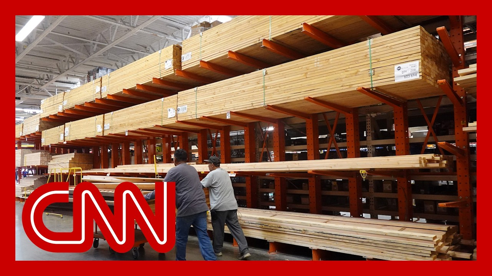

【CNN News 特朗普威胁对加拿大商品征收35%关税｜北美时间2050711】
Summary: Markets and the US economy faced volatility as Trump escalated trade tensions, threatening Canada with a 35% tariff and setting an August 1st deadline for new trade agreements, while tech stocks like Nvidia surged to record highs.
摘要： 市场和美国经济经历波动，特朗普升级贸易紧张局势，威胁对加拿大征收35%关税，并为新贸易协定设定8月1日截止日期，而英伟达等科技股飙升至创纪录高点。

⏱️ Estimated Reading Time: 18 min
📚 四级生词 📚 六级生词 📚 雅思生词 📚 托福生词 📚 专八生词 📚 SAT生词 📚 考研生词 📚 GRE生词 📚 高考生词 📚 其它生词生词
It has been another roller coaster week for watchers of these markets and of the US economy.
对于这些市场和美国经济的观察者来说，这又是动荡的一周。
With President Trump stoking up his trade war a new.
特朗普总统再次煽动贸易战。
On Thursday, he threatened to hit goods from Canada with a steep tariff of 35%.
周四，他威胁对加拿大商品征收35%的高额关税。
On the heels of a threatened 50% levy on Brazil, he fired off letters to more than 20 countries, spelling out what tariffs they would face if they don't strike new trade agreements by August the 1st.
在威胁对巴西征收50%关税后，他向20多个国家发出信函，阐明如果它们在8月1日前未达成新贸易协定将面临的关税。
Now, there was some good news from Wall Street, with tech stocks rallying the AI chip designer Nvidia becoming the world's first company valued at $4 trillion.
如今，华尔街传来一些好消息，科技股上涨，人工智能芯片设计公司英伟达成为全球首家市值达4万亿美元的公司。
Paul Donovan is chief economist of UBS Global Wealth.
保罗·多诺万是瑞银全球财富的首席经济学家。
He joins us now from London.
他现在从伦敦加入我们。
What do you make of what we have seen this past week?
你对过去一周的情况有何看法？
We've had equity markets hit record highs.
股市创下历史新高。
There are some of those highs now.
现在有一些高点。
And amidst, you know, an uptick in rhetoric from Donald Trump, which must be confusing for investors and the moving of a very definitive date on tariffs from mid this week, which you would have been watching out for until on August the 1st pick apart what we've learned this week and what your view is going forward.
在特朗普言辞升级的背景下，这必然让投资者感到困惑，而关税的明确日期从本周中移至8月1日，你一直在关注这一点。请分析我们本周了解到的情况以及你对未来的看法。
Well, let's start with the delay to August 1st.
好吧，让我们从推迟到8月1日开始。
I mean, I think this was inevitable.
我认为这是不可避免的。
It was, by any stretch of the imagination, unrealistic to do a large number of trade deals with a large number of companies in an extraordinarily complex global trading system in so short space of time, not for adding an extra couple of weeks here, and that is going to make a huge amount of difference.
无论如何想象，在如此短的时间内与大量公司在极其复杂的全球贸易体系中达成大量贸易协议是不现实的，即使多出几周时间，这也将产生巨大影响。
But, you know, the the date is now at least more flexible as a consequence of this.
但你知道，因此，现在的日期至少更灵活了。
So there was an interesting possibility, which is that the tariffs that we're now going to be seeing.
所以存在一种有趣的可能性，即我们将看到的关税。
So not the 10% tax that consumers were already starting to pay, but the next wave of tariffs may not actually work their way through to the consumer in America until, early next year.
不是消费者已经开始支付的10%税，而是下一波关税可能要到明年初才会真正影响到美国消费者。
So what we may be seeing just by a few weeks delay is it just pushes out that, hit to consumer spending power into the start of next year with regards to the general moves that we've been seeing in the markets we're now in, what I would call the retreat paradox.
因此，我们可能看到的仅仅是几周的延迟，就将对消费者购买力的冲击推迟到明年初。就我们在市场中看到的总体动向而言，我们现在处于我所说的“退缩悖论”中。
That is to say, markets believe the US President Trump will retreat from that more aggressive, trade rhetoric because frankly, that's what Trump always does.
也就是说，市场认为美国总统特朗普将从更激进的贸易言辞中退缩，因为坦率地说，这就是特朗普一贯的做法。
At the same time, if markets say, well, Trump's going to retreat, let's rally.
与此同时，如果市场说，好吧，特朗普要退缩了，让我们上涨。
That then reduces the pressure on the president to retreat.
这反而减少了总统退缩的压力。
So we're in a rather difficult situation.
所以我们处于一个相当困难的境地。
Markets are doing very well because they don't believe the president, which is giving the president the confidence to go around imposing ever more draconian taxes on US consumers.
市场表现非常好，因为它们不相信总统，这反而给了总统信心，继续对美国消费者征收更严厉的税。
Joining us right now is to talk to Sarah, and she's president and co-founder of the Budget Lab at Yale.
现在加入我们的是萨拉，她是耶鲁大学预算实验室的总裁兼联合创始人。
She also served as counselor to former Treasury Secretary Janet Yellen.
她还曾担任前财政部长珍妮特·耶伦的顾问。
Thanks for being here.
感谢你的到来。
It's good to see you, Natasha.
很高兴见到你，娜塔莎。
Let's focus in.
让我们集中讨论。
There's just been kind of a slew if you will, of new tariffs threatened.
可以说，最近有一系列新的关税威胁。
promised.
承诺。
We could also say and just the last I would even say just 24 hours really that I wanted to walk through with you to try to wrap our mind around where are we with this trade war?
我们甚至可以说，就在过去的24小时内，我想和你一起梳理，试图理解我们在这场贸易战中的位置。
First and foremost, what we heard now he's targeting Canada again, promising, threatening a 35% tariff on imports from Canada.
首先，我们听到他现在再次针对加拿大，承诺或威胁对从加拿大进口的商品征收35%关税。
This is in the midst of negotiations over their trade deal, just as Canada had promised to rescind a digital services tax that Trump had been railing against.
这是在双方贸易协议谈判期间，而加拿大刚刚承诺取消特朗普一直抨击的数字服务税。
So it seemed a concession.
所以这似乎是一种让步。
And then you have this.
然后你看到了这个。
So is it clear to you if this would go into effect now, what impact this new tariff would have?
那么你是否清楚，如果现在生效，这项新关税会有什么影响？
Well, so we at the budget Lab at Yale have been trying to, in real time, keep pace with all of the tariff announcements that are coming out from the administration.
好吧，我们在耶鲁预算实验室一直试图实时跟进政府发布的所有关税公告。
What I can tell you is as of late last night, effective tariff rates were around 18%.
我可以告诉你，截至昨晚，实际关税税率约为18%。
That's the highest they've been since 1934.
这是自1934年以来的最高水平。
That would translate to increased costs on the goods that Americans consume.
这将转化为美国人消费商品成本的增加。
On the order of about $2,300 a year.
大约每年2300美元。
Now, just this morning, we're waking up to a new 35% tariff on Canada and also potentially increases in the baseline tariff rates on all countries.
而现在，就在今天早上，我们醒来时又看到对加拿大的新35%关税，以及可能对所有国家基准关税税率的提高。
Trump has floated maybe a 15% or a 20% baseline.
特朗普提出了可能15%或20%的基准。
And so what you're seeing here is moving towards escalating and increasing tariffs relative to where we were previously.
所以你在这里看到的是，相对于之前，关税正在升级和增加。
And it kind of raises the question of like, what exactly is the end game here?
这引发了一个问题，即这里的最终目标到底是什么？
Like what exactly exactly one is what is enough and when is enough enough that it is just like, let's just say baseline is unclear.
比如，到底什么是足够的，什么时候才算足够？可以说基准并不明确。
I mean, it is not been it is not been articulated.
我的意思是，这还没有被明确表达。
What when enough is enough in terms of the the trade imbalance that they are looking at or when the imports, it's not clear.
在他们所关注的贸易不平衡或进口方面，什么时候才算足够，这并不清楚。
But to your point then there's so and wait there's more.
但按你的观点，还有更多。
Then the president also said yesterday that he's going he's the new baseline is going to be 15 or 20%.
然后总统昨天还说，新的基准将是15%或20%。
Here's the quote as he told it to NBC news.
这是他告诉NBC新闻的原话。
We're just going to say all the remaining countries are going to pay, whether it's 20% or 15%.
我们只需说所有剩余国家都将支付，无论是20%还是15%。
We'll work that out.
我们会解决这个问题。
Now, if you read into that, the baseline right now has been 10%, right.
现在，如果你深入解读，目前的基准是10%，对吧。
The across the board tariff is 10%.
全面关税是10%。
So what is that going to mean?
那么这意味着什么？
And where does that leave really leave this trade war?
这又将这场贸易战置于何处？
If now if you could say everyone across the globe and markets were prepared and settling into it at baseline 10%, but what does this then do?
如果说现在全球和市场都已准备好并适应10%的基准，那么这又会带来什么？
So and I think part of it kind of goes to where we started, which is in just the last 24 hours, in just the last few days, you've seen tariff rates move pretty dramatically.
所以我认为部分原因可以回到我们开始的地方，即在过去24小时，过去几天，你看到关税税率发生了相当剧烈的变化。
And if you look at where we are relative to where we were in January, we've seen more than 60 different tariff announcements.
如果你看看我们现在与1月份的位置相比，我们已经看到60多项不同的关税公告。
So effective tariff rates have gone up.
因此实际关税税率上升了。
They've gone down.
它们也下降了。
There's been a felt like that.
有这种感觉。
But putting a number on it is this is quite something.
但给它一个数字是相当了不起的。
It and kind of like we're in a situation where if you're thinking about not just the impact on consumers, but also the impact on businesses who are trying to make investment decisions, how exactly are they supposed to know where this is all going to look for businesses that were paralyzed?
这有点像我们处于一种境地，如果你不仅考虑对消费者的影响，还考虑对那些试图做出投资决策的企业的影响，它们究竟应该如何知道这一切将如何影响那些瘫痪的企业？
And it makes sense, right.
这是有道理的，对吧。
Because should you move manufacturing to the US if, you know, in a couple of months or a couple of weeks, you're going to see tariffs go off on these countries, interpolates rates be lower?
因为如果你知道几个月或几周后这些国家的关税将取消或税率更低，你是否应该将制造业转移到美国？
Should you actually invest in if this is really about China, should you invest in manufacturing in Vietnam or in India.
如果这真的与中国有关，你是否应该投资在越南或印度的制造业。
Because those are places that allow us to have sort of more of an allied relationship with respect to our trading partners.
因为这些地方让我们与贸易伙伴建立更多盟友关系。
And if this is fundamentally about revenue raising, if it's about the idea that we just had this massive deficit busting tax and spending bill last week, and we need to find revenue to sort of make up for that.
如果这从根本上是为了增加收入，如果是因为我们上周刚刚通过了这项大规模削减赤字和支出的法案，我们需要找到收入来弥补这一点。
Well, then these tariff rates are high and they're just going to keep getting higher.
那么这些关税税率很高，而且只会越来越高。
But they can.
但它们可以。
You added to that, if there is a very explicit example of now, it has nothing to do with economic policy and revenue raising when you're talking about Brazil.
你补充说，如果现在有一个非常明确的例子，当你谈论巴西时，这与经济政策和增加收入无关。
Totally.
完全正确。
So you have this threatened tariff on Brazil.
所以你看到对巴西的关税威胁。
And with the way the president lays it out, he's explicitly saying that he's using the tariff to try to help a political ally.
而总统阐述的方式明确表示，他正在利用关税试图帮助一个政治盟友。
Saying nothing about economic policy in the U.S. is trade surplus with Brazil.
完全没有提到美国对巴西的贸易顺差的经济政策。
And that's so.
就是这样。
So I have really been sort of as an economist, kind of frustrated by the focus of this administration on trade deficits because, you know, like I run a trade deficit with Whole Foods and it's good that I'm able to go there and buy food rather than having to sort of go and produce it myself.
因此，作为一名经济学家，我对本届政府对贸易赤字的关注感到沮丧，因为你知道，就像我与全食超市有贸易赤字一样，我能去那里购买食物而不是自己去生产是件好事。
But if you do think trade deficits are the sort of the central focus, then putting a 50% tariff on a country where we've had a trade surplus for the last 15 years doesn't really comport with that type of an explanation.
但如果你确实认为贸易赤字是核心焦点，那么对一个过去15年我们一直有贸易顺差的国家征收50%关税，并不符合这种解释。
And kind of they're being explicit.
而且他们很明确。
It's really about other stuff.
这实际上是关于其他事情。
And then that raises the question if it's really about other stuff, again, how do you plan, how do you have any certainty when there's likely to be more and more sets of policy priorities that we're trying to use this one particular, really ill suited tool to try and address.
然后这就提出了一个问题，如果这真的是关于其他事情，那么你如何计划，当可能有越来越多的政策优先事项时，你如何有任何确定性，而我们正试图用这个特别不适合的工具来解决。
Right.
对。
And remember, if you want to add just as we close with Canada, it was had to do with the fentanyl crisis as well.
记住，如果你想补充，就像我们以加拿大结束一样，这也与芬太尼危机有关。
So this is just a very good example of the administration does need to answer and clarify some of these questions at some point.
所以这是一个很好的例子，说明政府确实需要在某个时候回答并澄清其中一些问题。
Totally, and not just clarify.
完全正确，而且不仅仅是澄清。
Also explain why American consumers should bear the costs for all of this.
还要解释为什么美国消费者应该承担这一切的成本。
We will see.
我们拭目以待。
It's great to see you and Joshua.
很高兴见到你和约书亚。
Thanks for coming in.
感谢你的到来。
Thanks so much for having me.
非常感谢邀请我。
And I want to turn back now to those tariffs because soon you could be feeling it, say even in your morning coffee runs.
现在我想回到那些关税问题，因为很快你可能会感受到它，甚至在你早上的咖啡时间。
That's because of President Trump's latest threatened 50% tariff on Brazil, the countries where the country is the world's largest coffee exporter.
这是因为特朗普总统最新威胁对巴西征收50%关税，而巴西是世界上最大的咖啡出口国。
Trump says he'll impose the tariffs come August if Brazil doesn't end the trial of former President and Trump ally Jair Bolsonaro, he's accused of trying to stage a coup.
特朗普表示，如果巴西不结束对前总统、特朗普盟友雅伊尔·博索纳罗的审判，他将在8月征收关税。博索纳罗被指控试图发动政变。
Now, last night, President Trump also threatened to 35% tariff on Canada, and he's reportedly considering a blanket tariff on other countries.
昨晚，特朗普总统还威胁对加拿大征收35%关税，据报道他正在考虑对其他国家征收全面关税。
Joining me now is business journalist and host of the Full Disclosure podcast, Roben Farzad, Robin, good morning.
现在加入我们的是商业记者、《全面披露》播客主持人罗本·法尔扎德，罗宾，早上好。
Hi, Audie.
嗨，奥黛。
so we were in this moment where the economy looking at some of the numbers are actually pretty good.
所以我们正处于这样一个时刻，经济的一些数字实际上相当不错。
So what's your sense of why the president would be doing this now?
那么你认为总统为什么现在会这样做？
What's the perception?
外界的看法是什么？
And from the markets?
而市场的看法呢？
It's just at this point, it's just the constantly spewing fire hydrant of news out of the white House.
在这一点上，这只是白宫不断喷涌的新闻。
If you'll remember, a couple of weeks ago, we were fixated on World War three and Iran.
如果你还记得，几周前，我们还在关注第三次世界大战和伊朗。
It could be with ice, it could be with him versus universities.
可能是关于移民和海关执法局，可能是他与大学的对抗。
It's just constantly grabbing and hogging that attention.
这只是不断抓住并占据注意力。
And the problem with that is it's it's just so much being put out there that after a while, the market learns to yawn.
问题在于，有太多东西被抛出来，过了一段时间，市场就学会了打哈欠。
So are you really going to slap Canada with a 35% tariff over kind of negligible fentanyl trade over the border?
那么你真的要对加拿大征收35%关税，就为了边境上微不足道的芬太尼贸易吗？
But you want to look big.
但你想显得强硬。
Are you really going to hit Brazil, that enormous size of an economy that has an enormous breadbasket that we depend on back and forth for agricultural inputs, for minerals because of a political element, because of the fact that they're trying a former president there for attempted insurrection.
你真的要打击巴西吗？这个经济规模庞大的国家拥有巨大的粮仓，我们在农业投入和矿产方面相互依赖，却因为政治因素，因为他们正在审判一位前总统的未遂叛乱。
I mean, after a while, you see how much the market has gained, and we've hit records and you pay lip service to it in the morning, but they keep invoking tariff and chickened out.
我的意思是，过了一段时间，你会看到市场取得了多少收益，我们创下了纪录，你早上还对此敷衍了事，但他们却不断提起关税又退缩了。